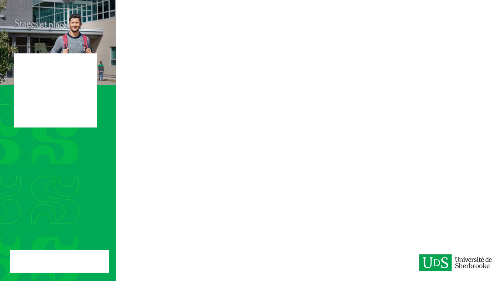

Notes de l'orateur (visibles en mode présentateur)
Choisir une mise en page (Modèle UdeS)
1. Titre / Couverture
2. Section Foncée ("Univers en soi")
3. Section Verte Éclatante

4. Image & Colonne Verte
5. Contenu avec Puces

6. Contenu Texte & Données
7. Diapositive Vierge